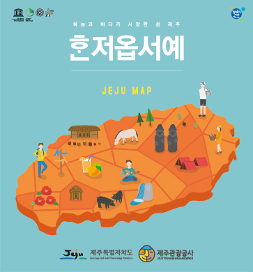

본 콘텐츠는 관광객들의 여행편의를 위해서만 제공하고 있습니다.
본 콘텐츠를 임의로 편집, 수정 후 인쇄용으로 재사용할 수 없습니다.
서울지역
| 번호 |
세부지역 |
업체 또는 기관명 |
주소지 |
전화 |
| 1 |
김포 |
제주관광홍보센터 김포국제공항 국내선청사점 |
서울 강서구 하늘길 112 김포국제공항, (청사) 국내선 2층 |
02-6925-0660 |
| 2 |
종로구 |
광화문 관광안내소 |
서울 종로구 세종로 215 광화문역 6번 출구 앞 |
02-735-8688 |
| 3 |
종로구 |
삼청로 관광안내소 |
서울 종로구 삼청로 68 안송빌딩 건물 좌측 1층 |
02-723-9472 |
| 4 |
종로구 |
여행자안내지원센터 |
서울 종로구 청계천로 85(삼일빌딩 앞) |
02-1800-9008 |
| 5 |
중구 |
DDP 관광안내소 |
서울 중구 을지로 281 DDP 지하2층 종합안내소 |
02-2153-0307 |
| 6 |
중구 |
동대문 관광안내소 |
서울 중구 을지로 6가 18-21 굿모닝시티 앞 |
02-2236-9135 |
| 7 |
중구 |
한국관광공사 관광안내소 |
서울 중구 청계천로 40 한국관광공사 서울센터 |
02-729-9497~9499 |
| 8 |
중구 |
남대문시장 관광안내소 |
서울 중구 남창동 52-1 코코상가 앞 29 |
02-752-1913 |
| 9 |
중구 |
명동 관광안내소 |
서울 중구 명동길 43-1 |
02-774-3238 |
| 10 |
서대문구 |
신촌역 관광안내센터 |
서울 서대문구 신촌동 74-21 |
02-363-7833 |
| 11 |
마포구 |
마포관광정보센터 |
서울 마포구 어울마당로 145-3 (동교동) 마포관광정보센터 |
02-334-7878 |
| 12 |
용산구 |
이태원 역사 내 관광안내소 |
서울 용산구 이태원로 177 |
02-3785-0942 |
| 13 |
송파구 |
송파 관광안내센터 |
서울 송파구 송파나루길 206 |
02-421-0970 |
기타지역
| 번호 |
세부지역 |
업체 또는 기관명 |
주소지 |
전화 |
| 1 |
광역시 |
인천 종합관광안내소 |
인천시 연수구 인천타워대로 234 |
032-832-3031 |
| 2 |
대전 |
트래블라운지 관광안내소 |
대전시 동구 중앙로 187-1 대전트래블라운지 1층 |
042-226-8410 |
| 3 |
울산 |
종합관광안내소 |
울산광역시 남구 산업로 646 |
052-258-8830 |
| 4 |
광주 |
홍보사무소(호남권) |
광주광역시 동구 금남로 180, 4층(금호빌딩) |
062-234-8861 |
| 5 |
부산 |
홍보사무소(영남권) |
부산광역시 중구 중앙대로 53-2 2층(중앙동 2가, 경농빌딩) |
051-412-4091 |
| 6 |
경북 |
경상북도 관광홍보관 |
경상북도 경주시 보문로 424-9 |
054-745-0753 |
| 7 |
부산 |
부산해운대 관광안내소 |
부산 해운대구 해운대해변로 264 |
051-749-5700 |
| 8 |
제주 |
KTO 중문안내소 |
제주 서귀포시 색달동 2558-1 중문관광단지 한국관광공사 안 안내소 |
064-739-1330 |
| 9 |
미정 |
누웨모르 관광안내소 |
방문시 문의 |
미정 |
| 10 |
제주 |
용두암 관광안내센터 |
제주 제주시 용두암길 15 |
064-728-3918 |
| 11 |
제주 |
제주시외버스터미널 |
제주시 오라1동 2441-40 |
064-728-3920 |
| 12 |
제주 |
한라산국립공원 어리목탐방안내소 |
제주 제주시 해안동 1200-1번지 어리목탐방안내소 |
064-713-9950 |
| 13 |
공항 |
인천공항 제1여객터미널 관광안내소 |
인천광역시 중구 공항로 272 인천국제공항제1여객터미널 2층 2133호 |
032-743-2600~3 |
| 14 |
공항 |
대구공항 관광안내소 |
대구 동구 공항로 221 |
053-984-1994 |
| 15 |
공항 |
무안국제공항 전라남도 관광안내소 |
전남 무안군 망운면 공항로 970-260 무안국제공항 전라남도 관광안내소 |
061-453-2248 |
| 16 |
공항 |
군산공항 관광안내소 |
전북특별자치도 군산시 옥서면 산동길2 군산공항 관광안내소 |
063-469-8305 |
| 17 |
공항 |
여수공항 관광안내소 |
전남 여수시 율촌면 여순로 386 여수공항 1층 |
061-659-5699 |
| 18 |
공항 |
울산공항 관광안내소 |
울산광역시 북구 산업로 1103 1F 울산공항관광안내소 |
052-710-3305 |
| 19 |
공항 |
제주공항안내소 |
제주특별자치도 제주시 공항로 2 제주국제공항 1F |
064-742-8866 |
| 20 |
공항 |
광주공항 관광안내소 |
광주 광산구 상무대로 420-25 광주공항 1F 관광안내센터 |
062-942-6160 |
| 21 |
공항 |
청주공항 관광안내소 |
충청북도 청주시 청원구 오창읍 오창대로 980 1층 관광안내소 |
043-231-5563 |
| 22 |
항만 |
완도여객터미널 관광안내소 |
전라남도 완도군 완도읍 장보고대로 335 |
061-550-5152 |
| 23 |
항만 |
여수엑스포여객선터미널(한국해운조합 여수지부) |
전라남도 여수시 엑스포대로 320-66 여수엑스포여객선터미널 |
061-640-4080 |
| 24 |
버스터미널 |
광주터미널 관광안내센터 |
광주시 서구 무진대로 904 광주터미널 관광안내센터 |
062-365-8733 |